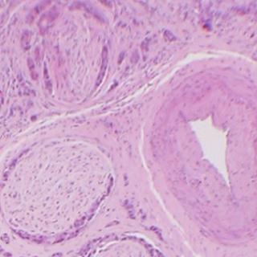
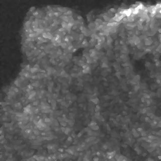

BiAlith


|
The use of the Wavelet Transform to De-Speckle OCT Images Optical coherence tomography (OCT) is an imaging method which can visualise micro-structure down to a few mm below the surface of opaque tissues. It is often likened to ultrasound scanning but OCT uses infrared light instead of sound to provide microscopic (histological) resolution images. It shows promise as a potential non-invasive diagnostic biopsy procedure in medical practice. We work on the interpetation of OCT images in breast cancer using OCT systems designed and built by Dr Adrian Podoleanu's group at the School of Physical Sciences, University of Kent at Canterbury, UK. We are currently using medium resolution OCT systems originally designed for clinical ophthalmological applications. Resolution of OCT can be much higher than shown in these examples - e.g. resolutions of 1 micron are achievable. |
a) H&E  |
b) OCT |
|
To illustrate the effectiveness of the new wavelet-based de-speckling procedure the following table shows raw OCT images (both single frame and 19 fame averages) together with the results of the wavelet-based de-speckler and a median filter. The averaged images show less speckle as the speckle phenomenon is a random event of fluctuation around the 'true' mean grey level. However, averaging requires a longer image capture time and sacrifices temporal resolution. The median filter is a classical speckle-reduction filter with edge-preserving properties however, it does tend to smear the image in a 'blocky' fashion so small details are obscured or obliterated. In the examples below the amount of median filtering was adjusted to give a highest peak signal-to-noise ratio (pSNR) possible. But even so the pSNR achievable by median filtering was lower than that achieved by the new wavelet method. |
Results on A Single frame OCT Image Left to right: Original OCT, Wavelet-de-dpeckled, Median Filtered |
||
|
 |
|
pSNR = 60 dB |
pSNR = 72.9 dB |
pSNR = 72.2 dB |
A 19-Frame Average OCT Image Left to right: Original 19-fame-OCT-average, Wavelet-de-dpeckled, Median Filtered |
||
pSNR = 65 dB |
pSNR = 78 dB |
pSNR = 75 dB |

 Dr P. J. Tadrous 2000-2026
Dr P. J. Tadrous 2000-2026